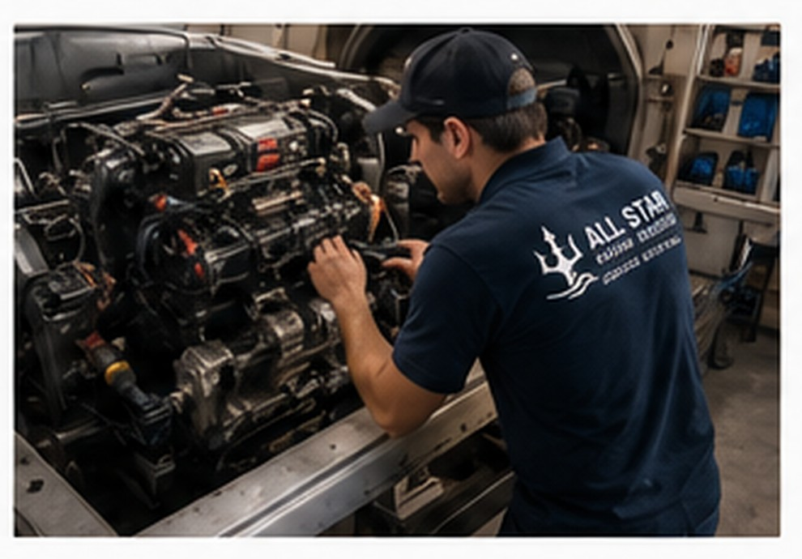
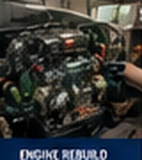
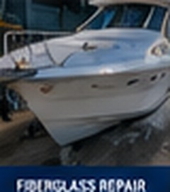

Engine & Mechanical
Inboard & I/O repair, tune-ups, diagnostics, cooling, fuel, transmission, propellers, shafts and steering.
LEARN MORE →PROFESSIONAL MARINE SERVICE
Professional repairs, maintenance, and upgrades to keep your boat running at its best.
Schedule Service Today Our ServicesABOUT ALL STAR MARINE SERVICES
All Star Marine Services provides marine repair and maintenance for boaters in the DC, Maryland, and Northern Virginia area. We also provide diving and salvage services along the eastern seaboard.
For over 7 years, our experienced technicians have worked on everything from small personal craft to large yachts. We handle routine upkeep, engine work, electrical troubleshooting, fiberglass and hull repairs, and full restorations.
Clear communication and fair pricing are at the core of what we do. Our goal is simple: to get you back on the water quickly and confidently.
Talk to Our Team
WHAT WE DO
From engine repairs to complete restorations, we've got you covered.
Inboard & I/O repair, tune-ups, diagnostics, cooling, fuel, transmission, propellers, shafts and steering.
LEARN MORE →Battery testing, wiring, shore power, generators, GPS, radar, VHF and electronics installations.
LEARN MORE →Fiberglass, gelcoat, bottom painting, blister repair, deck hardware and structural inspections.
LEARN MORE →Bilge pumps, freshwater, marine toilets, holding tanks, sanitation and hot water systems.
LEARN MORE →Wash, wax, polish, oxidation removal, teak, interior cleaning, canvas and upholstery repair.
LEARN MORE →Rigging inspection and replacement, winch service, sail inspection and replacement.
LEARN MORE →Winterization, spring commissioning, haul-out and launch preparation, and pre-season inspections.
LEARN MORE →Pre-purchase inspections, safety equipment checks, insurance claim repairs and custom modifications.
LEARN MORE →OUR WORK
A ready-to-fill area for real project photos and before-and-after work.

Repairs, diagnostics and upgrades.

Restoration and structural repair.
Modern navigation and onboard systems.
SERVICE AREA
We come to your slip, yard, or dockside; now offering at-sea repairs in certain areas — wherever your boat needs us.
CONTACT / BOOKING
Tell us what your boat needs and we'll help determine the next step.
⌖ Serving DC, Maryland, and Northern Virginia
Schedule Service Today